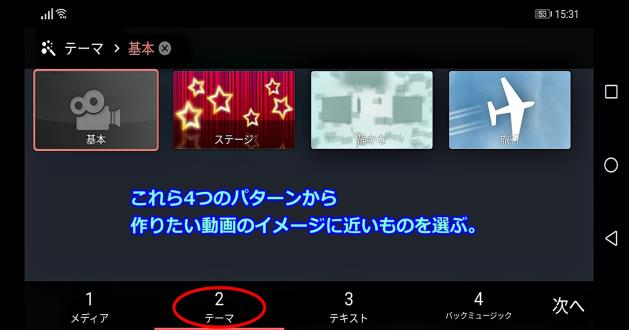
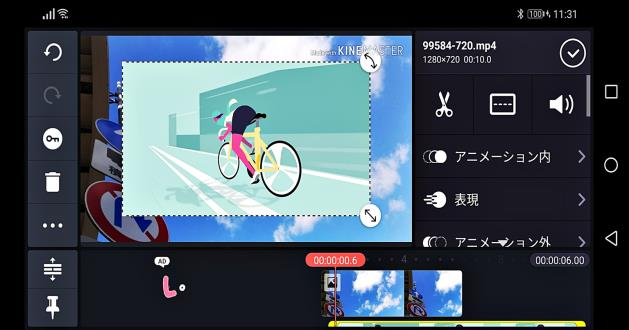
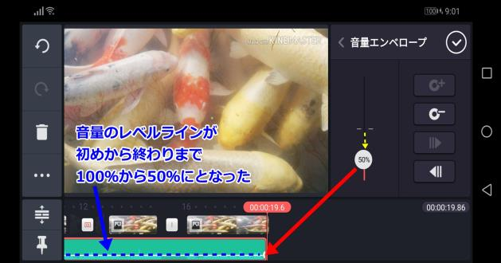
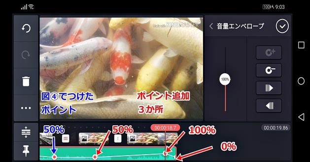
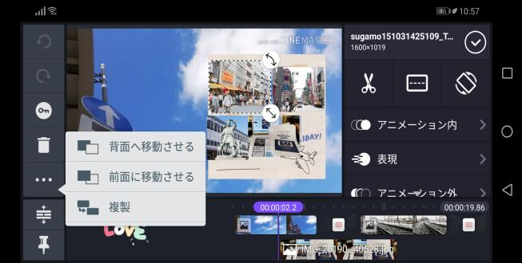
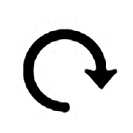
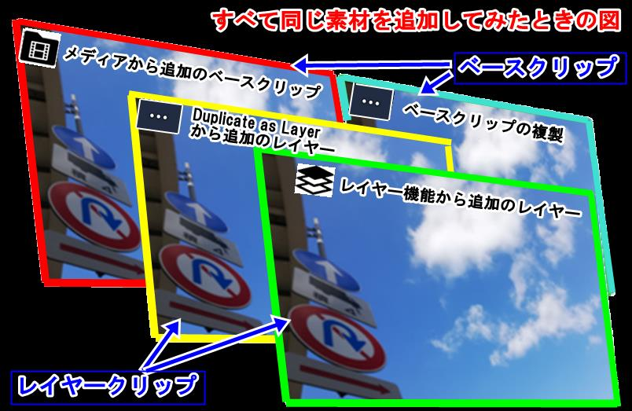
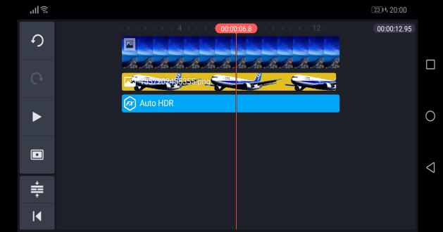
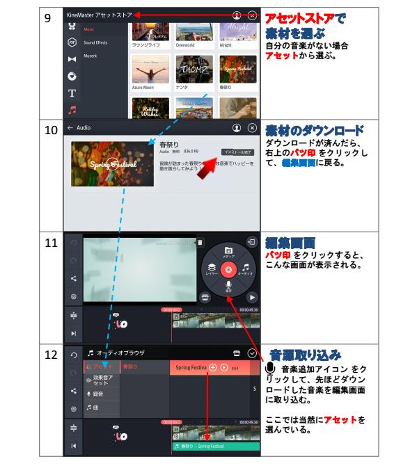
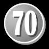

| B07SM487RW EBOK | |
| Unknown | |
KineMaster
第二版
作成者：John SunlineX
【はじめに】
この本は、モバイル専用／高機能・高性能／動画編集アプリケーション
「KineMaster」（キネマスター） の使用法について書いてあります。
●購読対象を、概ね「動画編集スキルで、初心者・中級レベル者」、また
「文章読解力で、中学高学年生以上」として、編集しています。
●「KineMaster」は、プロ仕様の本格的な動画編集アプリケーションです
が、「この本を読めば、誰でも簡単に楽しい動画が作れる」また「繰り返
し読めば、写真動画撮影や動画編集の能力がさらに身に付く」を作成の目
的としています。
●特に今回は、スキルアップに重きを置いた編集をしてありますが、本の
構成は前編と後編に大別され、前編は初心者向け、後編は中級者以上と
なっています。
「KineMstaer」は作業場所を選ばない、いつでもどこででも動画作成作業
ができるアプリケーションですから、浮かんだアイデアを直ぐに形にする
ことができます。
「KineMstaer」には、数えきれないくらいの本格的なプロ仕様の動画編集
機能があり、機能アップデートも再々なされていますから、飽きることな
く、生涯お使い頂ける素晴らしい動画編集用のアプリケーションと言えま
す。
あなた様の楽しみのほか、何某かの事業の広報宣伝に十分使える機能を備
えた直観的操作が可能なアプリケーションですから、かなり役立ちます。
こうした高機能製品をお使い頂くだけで、動画編集にかかる知識やスキル
アップばかりでなく、気が付けば、動画編集とは全く関係ない知識や能力、
「あれ？ こんな能力が身についてた！」という日が来て、あなた様の人
生がきっと豊かになることでしょう。
この本が、あなた様のお役に立てることを願っています。
John SunlineX
【おことわり】
初版本同様に、この本も著者の使用するモバイルAndroidタイプ仕様と個
人的な動画編集スキルに基づいて作成されている関係から、著者の思い込
みや見当違いから、内容に何某かの間違いがある可能性は捨てきれません。
知識不足、また校正ミスによる、誤字、脱字、誤表現はご許容頂けること
を願いつつ、この本をお買い求めに際しては、そこらをご納得が上でお買
い求め頂き、そして動画編集を頂ければうれしく、ありがたく思います。
本文中、「ですます調」では本文内容が改ページとなり、読みづらくなる
可能性があるを以て、申し訳なくも上から目線的に感じられるかも知れな
い「である調」を多用しております。
また、本来ならば、動画編集に掛かる「専門用語」を使わねばなりません
が、それ相応の表現が見当たらないを以て、自身の解釈で命名した、この
場限りの表現になっているものもあります。（例えばベース素材とか）
以上、そこらはご容赦下さい。
KineMasterの「ロゴマーク」及び一部の「ホームページ資料」使用につい
ては、KineMaster Japan様より使用許可を頂いております。
著作者：John SunlineX
プロフェッショナルな品質のモバイル動画編集
◆Facebook：https://www.facebook.com/KineMaster.JP/
◆YouTube（グローバル版）
：https://www.youtube.com/user/KineMasterApp
◆Twitter： @KineMasterJapan
はじめに 1
おことわり
2
目次
前編【キネマスター入門】
4
初めてのキネマスター 5
【1】キネマスターについて
6
①こんなことができる 7
【2】アプリのダウンロード・他 8
①ダウンロード先
8
②エディタ機能相関図 9
③主要アイコン 10
【3】動画作成の流れ
11
キネマスター始動 12
【1】動画作成２方式について 13
①動画新規作成プロジェクト 13
②各プロジェクト作業の流れ 14
【2】プロジェクト・アシスタント 15
【3】空プロジェクト 19
■プロジェクト事前設定 21
コーヒータイム 22
後編【マスターへの道】
23
スキルアップ講座 24
【1】素材の追加方法補足 25
【2】レイヤーの世界 26
①レイヤーについて 26
②ピクチャー イン ピクチャー 27
③テキスト追加 28
テキストに効果 29
④写真・動画の追加 32
写真・動画に効果 33
⑤オーディオの追加 34
オーディオに効果 35
音響エンベロープ 37,39
⑥テスト：多素材同時追加
40
⑦テスト：エフェクト追加
41
【3】クロマキー合成について 42
①背景の透明化 42
②クロマキー合成の手順 43
【4】素材別適用可能効果一覧
45
■メディアホール 45
■アクションバー 46
①テキスト 47
②写真 48
③動画 49
④オブジェクト
50
⑤オーディオ 50
素材に動きを与える 51
【1】素材種別と適用効果 52
■アセットストアで見つける 54
【2】基本的３効果 55
【3】Duplicate as Layer
56
【4】キーフレームアニメーション 57
初版本のオススメ！
60
主要エフェクト一覧
61
終わりに 65
・キネマスター素材別対応形式 66
・あとがき 67
資料 68
・使用素材
69
・カメラ機材
・クロマキー合成機材
・エディタ機能図再確認
前編
【キネマスター入門】


はじめての
キネマスター
1：キネマスターについて
2：アプリのダウンロード・他
3：動画作成の流れ
[1] キネマスターについて
「KineMaster／キネマスター」は、プロ仕様の動画編集ソフトに匹敵する
機能を備えた、直観的操作が可能な高機能高性能モバイル専用動画編集用
アプリケーションです。
編集機能は多機能で、効果やアセットストア素材は多種多様です。
アイディア一つで、素晴らしい動画を作成できます。
基本的な使い方から、順次アイコンをタップし、効果を適用されながら、
編集画面の左側にある様々な機能のうちの「戻す」「進む」の機能と、ク
リップを削除できる「ゴミ箱」機能を使われつつ、スキルアップを目指し
てください。
素材をお持ちでない場合は、この本で使用している素材の一部を掲載して
おりますので、モバイルモニターキャプチャーで撮影してお使いください。
「設定 」の中には、プロジェクト作成時に、あらかじめビデオやオー
ディオにフェードイン·アウトできる機能、あらかじめ動画や写真の表示時
間などを決められる機能、顔認証パンズーム機能など多数あります。
キネマスタートップメイン画面の中央左に「アセットストア」があ
ります。
そこには多種多様な素材、エフェクト、オーバーレイなどがあり、後から
追加可能です。(無料提供素材も多数あります)
ここにヘルプ
があるから
分からないこと
があったら
すぐに調べられ
るよ！
①こんなことができる
追加素材を新規レイヤーとしていくつも重ねることができる。
複数レイヤー
（端末のチップセットや素材の種類によって限りはある）
ピクチャーインピク
クリップを重ね合わせられる。
チャー＆クロマキー合成
ビデオレイヤーは背景透明化が可能。
即時プレビュー
編集しながら、プレービュー画面で完成度が確認できる。
クリップグラフィック
時間軸でクリップに何らかの効果を与えることができる。
クロッピング
クリップを空間軸的範囲指定で切り取りができる。
トリム・スプリット
クリップを時間軸的範囲指定で削除、分割、移動できる。
キーフレーム
クリップの時間軸でポイントマーキングし
アニメーション
キーフレーム効果を与えながらアニメーション化できる。
速度制御
動画の再生速度を変えることができる。
回転/反転
クリップを回転·反転できる。
クリップの色相、色調を変え、クリップの見た目を変えることが
色合い
できる。
カラー調整
クリップの明度、彩度、輝度を変えることができる。
音量調節
オーディオのステレオ化や複数の音源に主従関係を構築でき、
＆コンプレッサー
ピッチの変更で音質を変えることができる。
音量エンベロープ
オーディオ曲線に変化をつけることができる。
「動画編集は初めて」の初心者さん
には、何のことやらサッパリ分から
ない世界ですが、ロープレ、アドベ
ンチャー、アクションゲームより簡
単です。きっと！


[2] アプリのダウンロード・他
①ダウンロード先
お使いのデバイス・端末によって、ダウンロード先は以下になります。
■Android → Google Play でダウンロード。
■iOS → App Store でダウンロード。
デバイス画面にある
ダウンロードしたアプリアイコン →
これをタップでアプリ始動です。
「設定アイコン 」タップで
下表の図のような画面になります。
※デバイスのチップセット
・端末をご購入前に
・アプリダウンロード後に
必ず確認してね。
【重要】端末のキャパシティ情報
ここで デバイスのチップセット を
調べてください。
デバイスのチップセットによって
ビデオレイヤー等の機能に制限がある。
アプリ推奨チップのセットでない場合は
アップデートの際に
不具合が生じる可能性がある。
黄色の円囲みのアイコンをタップ。
ここでチップセット対応機能を調べる。
・何某かの要望ある時
・アップデートで不具合が生じた時
ストアレビューにて自身のチップセットを報告
し、要望に対応、不具合是正などを願う。
②エディタ機能相関図
キネマスターは、モバイル専用の動画編集アプリケーションですが、
パソコン用の本格的な動画編集ソフトと同等の優れた機能が豊富あります。
プレビュー画面は、素材の配置場所やタイムラ
↑上の図は、キネマスターメイン画面・エディ
イン全体の流れが見れる場所で、エディタ編集
タです。
画面内に配置された各素材全部の相互関係が窺
えます。
タイムラインは、追加された素材全部の配置場
↓下の図は、エディタの右にある「メディア
所や動きを統括する場所です。
ホールの各機能」とエディタ中央「プレビュー
トラックは、各素材のタイムラインの時間軸上
画面」の下にある「タイムライン」と「トラッ
の配置場所を示します。
クの各素材」の関係を示す図です。


③主要アイコン
アイコンは多種多様ゆえに
主要なもののみ掲載しています。
端末上の
アセット
アシスタン
空プロジェ
解説動画
ボリューム
設定
ヘルプ
アイコン
ストア
トで作成
クトで作成
YouTube
調整
メディア
メディア
オーディオ
レイヤーで
プロジェク
音声録音
プレビュー
撮影
ホール
素材選択
素材選択
素材取込み
トの保存
クリップ
その他設定
タイムライ
元にもどす
すすむ
トラック
ゴミ箱
OK
複製配置
配置・複製
ン先頭
トリム ＆
回転
グラフィッ
ビネット
音響エンベ
クロップ
色合い
カラー調整
スプリット
反転
ク・テーマ
縁取り
ロープ
アニメー
アニメー
アルファ
キーボード
文字種
文字色
表現
混合
ション内
ション外
不透明度
キーアニ
スピードコ
文字 左詰
文字 中央
文字 右詰
メーション
ントロール

[3] 動画作成の流れ
動画を作るきっかけは、何でも良いと思います。
クリエイティブな世界は面白く楽しいです。
ただ、何事も、動画編集も、慣れるまで、すごく時間を要します。
人生の貴重な時間を使います。
・何のために動画を作るのか
・作った動画は誰に見せたいのか
目的意識、それはとても大切なことと思います。
自分の楽しみのためや、動画編集スキルを磨くために作るのであれば、何
も気にせずにどんどん作れば良いと思います。ただ、どこかに公開するの
であれば、それなりの社会的な節度はいると思いますが・・・。
動画作成で大切なのは、見合う素材の準備と、それら素材の生かし方。


キネマスター始動
1：動画作成２方式について
2：プロジェクト・アシスタント
3：空プロジェクト
[1] 動画作成２方式ついて
キネマスターの動画作成方式は２種類あります。
①動画新規作成プロジェクト
プロジェクト・アシスタント方式
空プロジェクト方式
動画作成アシスタントの
動画作成過程のすべてを
指示に従って、新規作成。
自身の手で、一から作成。
P15参照
P19参照
★編集上の注意点★
★編集中のミス防止策★
・このアイコンをタップ。
プロジェクトのコピー作成。
コピーで編集作業
その完成度を見て、それをまたコ
ピーし、前の原本は破棄という保
険を掛けながら作業すると安心。
★注意★
・使用している素材は、当初の保
存フォルダやストレージから移動
してはならない。
・移動すればエディタが素材を見
つけられなくなり、タイムライン
上で行方不明的扱いになる。
②各プロジェクト作業の流れ
この上に
各プロジェクトに
対し
P? へ移動
を追加する
[2] プロジェクト・アシスタント
「プロジェクト・アシスタント方式」での動画作成方法は、プロジェク
ト・アシスタントのナビゲーションに従って作るだけという非常に簡単
なものです。
※この本では、素材とクリップは同じものですが、可能な限り、追加前
の原資を「素材」と表現し、追加後、何等か操作を加える段階の素材は
「クリップ」と表現しています。
プロジェクト・アシスタント方式で作ってみよう！
「プロジェクト」開始
端末上のアイコン をタップ。
①
左図のアプリメイン画面が開いた
ら、このアイコン をタップ。
「プロジェクト名決定」
「タイトルなし」とあるところに、
プロジェクト名（完成動画の名
②
前）となるタイトルを入れる。
右の「確認」を押すと、次の手順
に移動
メディアブラウザ欄
ここで、動画作成に必要な素材を
選ぶ。デバイス内の素材、もしく
③
はキネマスター提供の素材から選
ぶ。
注意：KineMasterはSDカード
から呼び込みや保存はできない。



メディア選択の続き
素材を選ぶたびに
下のラインに表示される。
④
テーマ欄
4つあるテーマから1つ選択。
⑤
一番左の「基本」には動画中のテーマイ
メージは付かない。
自分が選んだ素材だけで、エフェクトは後
から追加可能。（P31参照）
テキスト欄
⑥
ナビゲーションの指示に従って
「オープニング」「ミドル」「エ
ンディング」の各欄で、そこに見
合うキャッチフレーズを順次入れ
⑦
てゆく。
⑧
⑨


バックミュージック欄
BGMとなる音楽の取り込み。
⑩
取り込み前にプレビューで試聴す
る。
端末に音楽が無ければ
アセットストアでダウンロードで
きる。
⑪
をタップ。
「音楽を取得」をタップ。
「同意と継続」をタップ。
⑫
試聴しながらダウンロード。
⑬
このページの一番上⑩に戻る。
音楽が取り込まれたら「次へ」。
⑭


素材全部が
タイムライン上に配置された。
保存
エディタ・編集画面の右上端にあ
る アイコンをタップして保存。
⑮
ここでは、プロジェクトアシスタント開始
時、「タイトル欄」で付けた「プロジェク
ト名」の「旅に出よう」で保存されている。
※注意：再編集の場合は、必ずこ
の保存したものを原本とし、それ
をコーピーしたもので作業する。
動画に書き出し
解像度やフレーム数が上がれば、
画質は良くなるが、重くなる。
ここでは、解像度「HD720P」、
フレームレート「24（シネ
マ）」を適用し書き出す例図。
⑯
※解像度やフレームレートについ
ての説明は、ここでは省きます。
検索で学んでくださいね。
動画完成！
⑰

[3] 空プロジェクト
前ページでは、キネマスターの動画作成手順2方式のひとつ
「プロジェクト・アシスタント方式」についてお伝えしました。
ここでは、どんなアイデアも形にできる技術が身に付く
「空プロジェクト方式」についてお伝えします。
参考までに： 2019.04現在、メディアブラウザで素材を一気に取り込
みたい場合は「アシスタントプロジェクト」を利用。「空プロジェク
ト」では素材は1点ずつ取り込むことしかできません。
【キネマスターへの道】
空プロジェクト方式で作ってみよう！
KineMasterアプリトップ
メインメニュー画面中央にある
新規プロジェクトアイコン
①
をタップで作成開始。
3種類の動画アスペクト比
[16:9][9:16][1:1]から1つ
作成動画のイメージに合わせ選択。
②
※注意：この後、先にP21を参照で
「プロジェクト開始前事前設定」
をしておく。
エディタ右「メディアホール」の
「メディア」をタップで、使用す
る素材を選択。
③
※素材は、SDカードからの読み込みはで
きない。デバイス内部素材やキネマスター
標準素材を使用。


プロジェクト
空プロジェ
方式
クト方で作っ
式で作てみよ
ってみう！
よう
！
取り込み素材は、編集画面下の
タイムラインと呼ばれる場所に
取り込み次第、順次表示される。
④
取り込まれたタイムライン上の素
材（写真、動画、音源）を編集。
タイムライン上やプレビュー画面
上で素材をタップすると
「メディアホール」が「エ
⑤
フェクト選択画面」に変わる。
そのとき編集画面に表示される
様々なエフェクトを利用してみる。
（P45以降を参照）
「オーディオ」の取り込み。
・取り込む時期は任意。
⑥
・取り込み方はP34を参照。
「レイヤー」で素材の追加。
・追加素材は「タイムライン」と
「プレビュー画面」の両方で操作
可能。
⑦
・取り込み素材それぞれに何某か
の効果を適用し、プレビューで全
体のバランスを整えて保存。
「レイヤーとは？」については
Ｐ26以降に図入りで説明
・それを動画に書き出して完成！

プロジェクト
空プロジェ
方式
クト方で作っ
式で作てみよ
ってみう！
よう
！
※プロジェクト事前設定
プロジェクト開始前に
エディタ左側にある
歯車アイコン「設定」 で
以下に掲げる部分の設定が可能。
注意：あらかじめ、ここでフェードインアウトなどをしてあると、編集中
に、フェードインアウトが無い方が良いときに「？？？」と戸惑う可能性
がある。編集中でも設定は可能であることに留意しておく。
※フェードインアウトは、後の方で紹介する基本的３効果「アニメー
ション内」や「アニメーション外」を利用して開始終了にフェードイ
ンアウトを付けたり、オーディオの場合は「音響エンベロープ」を利
用した方が良いかも知れない。
コーヒータイム♪
こんにちは。この本の作者 Johnです。
私は、どこにでもいるお爺さんで、写真家でも執筆家でも、プロの映像処理者でもありません。
でも、写真撮影が好きです。時間軸に沿った素材の動
きについて
写真は、今の今しか撮れないし、この世は流転していますから、一枚として同じものが撮れません。
だから今を撮れる写真が好きです。
で、私が普段に写真撮影で心がけていることを、メモ帳に走り書きみたく、適当に書き並べてゆきたい
と思います。
多くの生き物が住まう世界ですから、写真撮影の機会は、多くあります。
見た、触れた瞬間に、こころを捕えて離さない、こころ惹きつけて離さない世界。
その時の感動を残したい、誰かに伝えたい、共有したいと思い、今に手に持っているもので形にします。
文字にしたり、絵にしたり、歌にしたり、写真にしたり、動画にしたりと、何らかの形にします。
■カメラの構え方
・撮影姿勢
基本、撮影時には脇を締めて、体のブレを少なくする。
片手で敢えてブレさすこともあります。
（夜間などはシャッター押すと同時にカメラを振ると、灯りが流れる世界が撮れます）
・カメラのモニターには、グリッド線を入れる
（動画の僅かなブレは、文字を入れたときに明確になります。グリッドでできるだけ水平を維持しな
がら撮影します。テキストと違和感あるブレが目立つときはテキストを動画の一色の中に入れるか、
動画を拡大すれば目立たなくなります）
・ピント 笑顔認識。フォーカス。
被写体と光の方向 順光 逆光 斜光
今見た瞬間を写す練習 → 瞬時にカメラを向けてシャッターを押し、対象物が魅了するものを撮る。
写真は一枚限り。今の今しか写せない。一枚として同じものは撮れない。
■写真を撮る
・アップ・ロング、ぼかす、斜め
■動画を録る
・基本、三脚使って固定撮影。
・カメラを左右に振りながら撮影（パン）また、上下に振りながら撮影（ティルト）。
・ズームイン・アウト。（ピント合わせたままズームで撮影）
・フォーカスイン・アウト。（ボケ状態からピント合わしながら撮影。またその逆）
・移動機材使ってドリーイン・アウト。（部屋ではコマ付椅子を使ったりします）
・フレームイン、アウト。（被写体にカメラに近づいたり離れたりしてもらう）
・普通は水平に撮影だが、あえてダッチアングルと呼ばれる斜め撮り方法で撮る。
■被写体の何処を写す。（撮影部分と周囲空間のバランス）
・アップー顔 頭部全部を入れる、入れない？ 後頭部を入れる、入れない？
・バストショットー胸から上 臍より上？ みぞおちより上？
・フルショットー全身撮影 全身の上下左右の空間。顔や体が向いた向きで向いた方向をより広く。
後編
【マスターへの道】


スキルアップ講座
1：素材の追加方法補足
2：レイヤーの世界
3：クロマキー合成
4：素材別適用可能効果一覧
プロジェクト方式で作ってみよう！
[1] 素材の追加方法補足
動画の背景となるバックグランド素材（ベース素材）の取り込み方につい
ては「２方式ある動画作成方法」の各方式の説明でお伝えし（P13参照）、
バックグランド素材の上に何某かの素材を追加することは「レイヤー」
機能でいつでもできるとお話しました。（P20参照）
レイヤー機能についての詳細説明はこの後に譲り、ここでは「プロジェク
ト編集中に、また新たに何某かの素材をベースクリップとして追加する、
その方法について説明します。
※追加位置に注意！
クリップの前後、またクリップとクリップの間の「トラジッション（切り
替え効果）」の前後を指定して「メディアホール」→「メディア」
→「メディアブラウザ」の流れで素材を選択すれば、指定した場所に素材
をクリップとして追加できます。
■動画先頭に追加
※クリップの長さ調節は素材の端を
スクロールして調節する。
（トリミング＆スプリットでも可能）
タイムラインは「ピンチ」で拡大縮小できる
ので、拡大しながらポイントを設定する。
■クリップとクリップの間に追加
注意： トラジッション
（切り替え効果）の前に追加した時、
追加素材とその前の素材の間の切り
替え効果は未設定となる。
■動画最後尾に追加
[2] レイヤーの世界
①レイヤーについて
「レイヤー」とは「層」という意味で、画像処理における「レイヤー」は、
目には見えない透明なシートのようなものです。
そのレイヤーの、１枚１枚のレイヤーに、文字や写真や動画などを貼り付
けながら、透明度を施せば、上から見たときに、何枚ものレイヤーの重な
りが１つの１枚のイメージ、絵となります。
キネマスターの
レイヤー関連機能図

②ピクチャー イン ピクチャー
ビデオレイヤー（ピクチャー イン ピクチャー）機能により、ベースク
リップ上に複数の動画、また写真やオブジェクトを任意の状態で載せるこ
とができます。
※注意：ビデオの重ね合わせられる数はデバイスのチップセットに依存し
ます。（P8参照）
・動画は「クロマキー合成」で選択色透明化が可能です。
・写真の背景透明化はキネマスターではできません。
各レイヤーは左のアクションバーから、その順番を入れ替えることが
できます。入れ替えは一番下にしたいものから「背面へ」と順次行います。
プロジェクト方式で作ってみよう！
③テキストの追加
動画には欠かせないテキスト。
「プロジェクト・アシスタント方式で作成」（P15参照）で、アシスタン
トのナビゲーションに従ってテキストを追加する方法についてはお分かり
頂けていると思いますが、ここでは新たに「レイヤー機能」から追加する
方法をお伝えします。
「メディアホール」
↓
「レイヤー」
①
↓
「テキスト」
の流れで追加する。
適当なフレーズを書き込むみ、
「確認」をタップ。
②
？ 何らかの理由で、テキスト挿入時に
「改行」ができない場合は、スペースを入
れながら改行する。
トラックに追加と同時に、プレ
ビュー画面中央にも表示される。
③
テキスト素材に限らず、エディタ
のプレビュー画面上にある素材の
周囲が破線で囲まれている状態で
編集が可能となる。
注意：プレビュー画面に多くの素
材が重なり合っているとき、編集
したい素材が破線で囲まれている
④
状態を確認してから編集作業をす
る必要がある。


テキストに効果
テキストに
「回転」
「伸縮」
①
を適用してみる。
①の図の下「トリミング予定」と
書いた部分をカットしてみる。
②
（トラック上でテキストの右端を
左にずらし、表示時間の長さを調
節できる）
素材に効果与える方法はいくつか
あるが、ここではテキストに基本
的3効果を適用してみる。
③
「アニメーション内」は時間軸
で初めに与えられる効果。
「表現」は時間軸で始めと終わ
りを除く部分に与えられる効果。
「アニメーション外」は時間軸
で最後に与えられる効果。
④
それぞれの効果で、適用時間を変
えれる。
文字色を変えてみる
右上の赤丸（初期値は白）
を部分をタップし
⑤
次ページの図⑥にあるように、何
某かの色（ここでは赤）を選択す
ると、この図のようになる。
プロジェクト方式で作ってみよう！
文字色選択中。
⑥
テキスト装飾
テイストに陰や輪郭をつけたり、
テキスト全体に色帯で背景を入れ
⑦
たりできる。
プレミアム機能「混合」
ここで、不透明度／オーバーレイ
／複製／画面／右へソフト／左へ
⑧
ハード／軽い／ダーク／カラーバ
ンなどの効果が得られる。
文字種の変更
アイコン をタップし、そこに
表示された文字種を選択で適用。
⑨
文字揃えの変更
・左詰め・センター・右詰め
標準は「センター」。
※アクションバーにある
⑩
その他設定アイコンで
テキストをエディタ、プレー
ビュー画面の上下あるいは左右の
中心に置くことができる。

テーマ別テキスト効果
プロジェクトのテーマは
「プロジェクト・アシスタントで
作成」（P16参照）で紹介した
４パターン以外に数多くある。



プロジェクト方式で作ってみよう！
④写真・動画の追加
写真・動画の追加は、テキストの追加と同じ流れでできます。
写真・動画に適用できる効果は、たくさんあります（P48・Ｐ49参照）が、
ここでは、基本的なものを少しだけ扱っています。
ここでは、説明上、写真と動画の２点を交互に追加しています。
「メディアホール」
↓
「レイヤー」
①
↓
「メディア」
の流れで、素材の追加をする。
写真の追加
図①→図②の流れで
素材ファイルを選択取り込み。
②
動画の追加の取り込みも同じ流れ。
図③は写真を追加したときの状態
写真も動画も、タイムライン上に
③
追加された時点で、プレビュー画
面中央に表示される。
図④は動画を追加したときの状態
④


写真・動画に効果
動画に限り、背景色１色を
「クロマキー合成」によって
透明化できる。
①
前ページの図④で取り込んだ動画
に適用した状態。（クロマキー合
成についての詳細は、P42参照）
2019.4月時点、写真は、キネマ
スター上で背景透明化はできない。
取り込む以前に透明化をしておく
②
必要がある。
ただ、写真は、背景の透明化はで
きないが、「クロッピング」
を使えば、図②の要領で、不必要
な部分をカットし、その周囲をボ
カスことはできる。
③
-------------------------
上記のクロマキー合成やクロッピ
ング以外で、写真や動画に再々適
用する効果として以下がある。
基本的３効果
トリム・スプリット
④
回転・反転
画面分割
その他によく使うものとして
図③ アルファ不透明度
図④ 色合い
図⑤ カラー調整
-------------------------
⑤
※注意 トラジッション
（クリップ間の切り替え効果）を忘れない
ように！


プロジェクト方式で作ってみよう！
⑤オーディオの追加
オーディオ（音源）の追加には
・オーディオアイコンから素材を選んで追加（図①＆②左図）
・録音アイコンで音声録音して追加（図①＆②右図）
・ベース素材が音声含む動画の場合「音声抽出」で追加（図③）
・アセットストアやレイヤー機能から追加（図④）
の4通りあり、追加時点でトラックに順次表示されます。
左図のアイコンをタップすると
次の図②の左右の図で示す状態に
なる。
①
②の左図が から。
右図が から。
②
音声抽出
クリップが音声含む動画
であった場合、その動画から音声
③
を取り出し、タイムラインに1つ
のトラックとして追加で、別利用
できる。
これは、エディタメインのアイコ
ン や「レイヤー機能 」で
開くアセットストアで音源を
④
得るとき表示される状況図。
初めてアセットストアに寄ったときは、プ
レミアム契約の案内が出る。（Pを参照）

プロジェクト方式で作ってみよう！
オーディオに効果
ボリューム調整
動画やオーディオクリップをタッ
プで表示される アイコンを
①
タップで調整。
「コンプレッサー」や「ピッチ」
機能が使える。
トリム・スプリット
（左図の説明を参照）
テキスト・写真・動画・オーバー
レイ・オーディオなど・・・
すべてのクリップに適用できる編
集用機能。
-----------------------
「トリミング」は、不要部分カッ
ト・削除機能。
※素材の端をスクロールして短くすること
で削除と同じようにはできるが、オーディ
オは、きちんとしたポイントを定めての削
②
除が必要になるので、トリミングを使った
方が良い。
-----------------------
「スプリット」は、分割分離機能。
※クリップがオーディオ含む動画の場合、
この機能の「 抽出」機能によって、動
画から音声を取り出し、分離させることが
できる。
この時、元動画にも音声は残っているので、
例えば抽出した音声を少しずらせば、エ
コーをかけたみたいにもできる。
※また、素材の部分分割ができる。分割し
た部分が不要ならば削除。また違う場所へ
移動したり、分割した部分を複製して重ね
たりして、動画の流れに変化を持たせたり
することができる。

プロジェクト・アシスタント方式で作ってみよう！
音響エンベロープ
オーディオの音量波形を操作して
③
音量に変化を持たせられる。
※別ページ P37以降で、詳しく
紹介。
オーディオフィルター
ボイスチェンジャー機能
※例図①②③で紹介の効果を深め
④
ればインパクトある音響が得られ
るが、更に少し奇を衒うインパク
ト与えたいとき、これが使える。
背景
レイヤーで取り入れた
オーディオを、BGM（バックグ
⑤
ランド動画素材の音声と同じ扱
い）にする効果。
ループ 連続再生
オ
※上述の各例図は、説明上、筆者
ー
が思う流れで任意設定している。
デ
ィ
オ
※機能操作・効果適用は、キネマ
用
スターを使う人のアイディア次第。
効
果
ア
イ
コ
ン

プロジェクト方式で作ってみよう！
オーディオに効果
音量曲線に変化を与える
音響エンベロープ その1
※フェードインアウトは、空プロ
ジェクトの作成時にアクション
バーにある設定アイコン で予
①
め設定が可能（P21参照）だが、
ここでは音響エンベロープの扱い
方を説明するに便利が良いので扱
う。
図①トラックの音源をタップ。
右上のアイコン をタップする
と、次の図②の表示になる。
②
図②音源トラック上に音量の
レベルラインが表示されている。
音源の先頭部分で
音量のレベルを
100％から0％
③
にする。
フェードインを止めたい場所が決
まったら、再度、音源トラック、
あるいは をタップし、タイム
④
ライン上の赤い立筋のスライダー
が表示されている場所で、音量を
100％に戻す。フェードイン完了。
次に音源の最後尾に移動する。
この時点では最後尾は音量は
⑤
100％になっている。
プロジェクト方式で作ってみよう！
次に、音声を聞き流しながら、
フェードアウトをかけ始めたい場
所で「アイコン 」をタップし、
位置指定で音量確定する。
次に、その最後尾の音量を
０％まで落とす。
⑥
タイムラインの長さより
これでフェードアウト完了。
オーディオ素材が長いときは
トリム・スプリットアイコン
でオーディオの末尾をカットして
から行う。
【用語解説】
エフェクト (effect) とは、英語で「効果」「影響」「結果」の意味。
元からあるものに対して加工を加える、もしくは加えた場合などに使われる。
基本的には「映像」や「音声」を加工する場合に用いられるのが一般的である。
また、時として映像の背景にある物（飾りを初めとして、雲や雷、雨）を指す場合もある。
その場合は実際その映像が撮られたり録音された時点での実際の天候ではなく、人為的に加え
られたものだけを指すのが通常である。
例えば実際は晴天なのに、カメラの前にジョウロで水を流せばあたかも天気雨のシーンを作る
事が可能であり、これも一種のエフェクトと捉えることができる。 （Wikipedia）
トリム 英語の動詞 trim。
名詞形はトリミング (trimming)。
トリムする者はトリマー (trimmer)。
一部を切り除くこと
・トリミング (写真)。写真や画像の周辺部を切っ
て構図に手をくわえること。
・トリミング (映画映像の用語)。映画の映像の左
右（または上下）を切り取って縦横比を変更する
こと。
・文字列の前後の空白文字を削除すること 。




プロジェクト方式で作ってみよう！
音量曲線に変化を与える
音響エンベロープ その2
・音源全体のボリュームは
ボリュームで変えられる。
①
・音声途中のボリュームを自在に
操りたいとき、例えば音楽でいう
「クレッシェンド・デクレッシェ
ンド」みたいな流れを作りたいと
き、以下のような流れで音響
エンベローブを扱う。
②
アイコン をタップで
ポイント定めながら
音源の先頭（図①）と
最後尾の音量（図②）を
任意の高さにする。
（ここでは説明上50％にした）
③
続いて
図③のように、任意のポイント決
めて100％に戻し
また
図④のように、任意のポイントで
50％に戻す。
④
同じ作業で、図⑤のラインの中ほ
どのように、もう一か所ポイント
つけて、平行ラインになっていた
音量を最後尾近くで図⑤のように
100％に戻し、ラストの盛り上げ
をする。
⑤
終わりは、図⑤のように
0％にしてフェードアウト。

⑥テスト：多素材同時追加
レイヤー機能欄で、レイヤーとして追加できるものには、写真、動画、テ
キスト、何らかのイメージ、アセットストアから追加のものなど、多数あ
ります。
ここでは「オーバーレイ素材」を取り込み、それを他の素材と組み合わせ
るという、少し込み入った手順をご紹介します。
「レイヤー」機能欄で使える
レイヤーの中から・・・
ここでは「オーバーレイ」を
①
選択した。
「オーバーレイ」→「トラベルス
クラップブック」→「一つのデザ
イン」の順で素材を選択。
②
取り込み素材は、選択と同時に
プレビュー画面に表示される。
次に、窓枠に入れる写真素材を一
つずつ取り込みながら、ブックの
窓枠に順次はめ込んで行った。
③
この時、レイヤーは一番奥「背景」から→
「ブック」→「写真」の順である。
各写真がブックに収まるように、後から、
レイヤーの順序で「写真」と「ブック」は
入れ替える必要がある。
レイヤーの入れ替え方法は次のページ参照。
④
図④は、スクラップブックに入れ
る素材を全部取り込んだときの各
トラックの配置状況図。


⑦テスト：エフェクト追加
素材をスクラップブックの窓上
に取り込み、クロッピングで、
ブックの窓に収まらない部分を
カットした。
※こんなこともできる。
クロッピングの際に、素材を、
⑤
ある形でカットしたり、素材の
周囲をぼかすことができる。
例えば、ここでは、窓枠が小さ
く写真素材を収めにくいを以て、
四角を選択形状を選択し、
マスクで、下のレバーを移動さ
せながら、写真の周囲をぼかし、
窓枠に収めやすくした。
ブックの窓全部に写真が収まっ
たら、ブックが全写真の上に来
るように、レイヤー順序を入れ
⑥
替えた。
完成！
※注意：各素材のタイムライン配置場
所や適用エフェクトに注意。
開始終了の時間軸や適用エフェクトの内
⑦
容が違えば、各素材の動きに統一性がな
くなる。プレビューで何度も確認しなが
ら、意図したところに落ち着くように作
業する。


[3] クロマキー合成について
①背景の透明化
レイヤーとして追加された写真や動画を「ピクチャー イン ピクチャー」
で重ね合わせるとき、上に来る素材の不必要な部分を削る、切り取る、取
り除くには2つの方法があります。
1つには「クロッピング」です。
クロッピングによって、不必要な部分を取り除き、最小限必要な部分だけを残し、マスクを
かけて周囲をぼかす。そのことについては少し前のページでお話しました。
※全体のぼかしについては「アルファ（不透明度）」や「混合」という機能が
キネマスターにはあります。
2つ目は、配色の中から一色だけを透明化するという「背景透明化」で、
動画では「クロマキー合成」と呼ばれる手段です。
よくアーティストやモデルさんの撮影で、後ろに緑色や青色の垂れ幕がかけてある、また、
動画で背景が一色ものとかを見られたことがあると思いますが、それらは後にクロマキー合
成で背景を変えて使うという目的で行われています。
背景透明化
キネマスターでは、写真の部分透明
化はできません。
写真の場合は、何某かの、それ用の
ソフトやアプリで背景を取り除く必
要があります。
背景透明化ができる写真は
拡張子が「.gif」か「.png」です。
キネマスターでは、写真の背景透明化はでき
ませんが、この状態で取り込み、動画にした
後に、クロマキー合成で背景色、ここでは緑
色を抜く、透明化することができます。
②クロマキー合成の手順
キネマスターでクロマキー合成をするとき
「 キーカラーの選択」→「クロマキー詳細」＆「マスク表示」
この3つの機能をうまく利用しながら、色を抜いてゆきます。
それでも抜け切れないときは、「アルファ（不透明度）」機能でぼか
したり、「カラー調整」や「色合い」で色に変化で再度調整した
りします。
ここでは、クロマキー合成の説明
のために、背景色三種類の素材
背景 レイヤー１
・背景が「空色」の写真
・背景色が「緑色」のイラスト
・背景色が「青色」のイラスト
レイヤー2 レイヤー3
をレイヤーとして取り込み、動画
を作った。
上の条件で作った動画を取り込ん
だ。
テスト１
取り込んだ動画をタップ。
右の「クロマキー合成」で
背景色「キーカラー：緑色」を選
択し、レバーを動かしながら色の
抜け具合を調節。
「マスク表示」で、上二つのレ
バーを左右させながら、できるだ
け、抜きたい色が黒、残したい色
が白になるように調節。
テスト2
背景色「キーカラー：青色」を選択
し、レバーを動かしながら色の抜け
具合を調節。
緑色や青色の単色は、色合わが簡単
で、アッサリ抜ける。
テスト3
背景色「キーカラー：緑色と青色が
同時に抜けそうな色合い」で、三つ
の写真の背景色を同時に抜いてみる。
けっこう難しい。
プレビューで良い感じになったら、
「マスク表示」で、できるだけ白黒
の明暗差を明確にする。
次に
「クロマキー詳細」で微調整する。
少し緑が残っていたので
「アルファ処理」してみる。
以上の例図は、普通はしない２色抜
きだが、クロマキー合成を理解頂く
ために、勉強のために、テストして
みた。


[4] 素材別適用可能効果一覧
■P45、P46は、エディタのメディアホールやアクションバーにある効
果と適用できる素材の関係についての表です。
■P47以降は、素材別の適用可能効果です。
（表の斜線は適用不可）
【メディアホール】
エディタの右に設置された機能集約サークル
ア
テ
オ
効
写
動
音
そ
イ
キ
ブ 飾
の
コ
ス
ジ り
果
真
画
声
他
ン
ト
ェ
ここで、キネマスター標準装備の素材や
メディア
端末にある素材、またはクラウドにある素
ブラウザ
材を選べる。
ここで、オーディオ素材（音楽・音声・効果
オーディオ
音など）が選べる。
タイムリーな録音ができる。
録音
バックグランド素材（ベースクリップ）の上
レイヤー
に載せる素材を選べる。
カメラ起動で撮影できる。
撮影
即時、タイムラインに追加できる。
プロジェクト保存用アイコン。
保存
タップで保存される。
タイムラインの流れを、即時確認できる。
プレ
ビュー
KineMaster・キネマスター提供素材が使
アセット
える。有料と無料あり。
ストア
エディタ右上「KineMaster」ロゴを消すに
ゴミ箱
利用。プレミアム契約に移行。



【アクションバー】
エディタの左に設置された機能集約バー
ア
テ
オ
効
写
動
音
そ
イ
キ
ブ 飾
の
コ
ス
ジ り
果
真
画
声
他
ン
ト
ェ
編集作業を一つ前の作業に戻す。
もどす
戻した編集作業を、また元に戻す。
すすむ
完成プロジェクトを動画として書き出し、
共有
何某かのサイトにアップ共有。
素材に対し、時間軸で、複雑な動きを設
キー
定でき、基本的３効果と併用で優れたア
フレーム
ニメーション効果が得られる。
タイムライン上で、スライダーがある位置
フレーム
のフレームを取り込め、スライダー位置の
操作
前後に挿入か、新規レイヤーとして追加。
選択クリップの削除ができる。
ゴミ箱
「もどす」を使えば復旧できる。
プロジェクト開始前に、様々な事前設定が
プロジェ
できる。
クト設定
レイヤーにおける素材位置の変更。
その他
素材のコピー・複製ができる。
設定
タイムラインにおける各素材（クリップ）の
トラック
位置と時間軸を確認できる。
これで、タイムライン途中にあるスライ
ヘッド
ダーをクリップの時間軸の先頭か末尾に
瞬時移動できる。
素材をタイムライン上のある時間軸上に
ピン止め
ピン止め出来る。


②テキスト
テキストクリップをタップ時に示されるアイコン
効果
テキスト打ち込み
キーボード
様々な欧文フォント主体の文字種を選べる。
文字種
（アセットストアには、日本語書体はじめ、多くの書体がある）
トリミング
クリップの分割・削除ができる。
スプリット
メ
テキスト色を選択できる。
文字色
デ
ィ
アニメーション
基本的３効果
内
クリップのタイムライン上の時間軸で開始部分に効果を適用できる。
ア
ホ
基本的３効果
表現
上の「アニメーション内」及び下の「アニメーション外」を除く時間軸
ー
で中間部分に効果を適用できる。
ル
基本的３効果
アニメーション
側
クリップのタイムライン上の時間軸で終わりの部分に効果を適用で
外
きる。
アルファ
クリップに
不透明度
0～100％で不透明度を適用できる。
回転
クリップを任意角度で回転。
反転
クリップを上下左右に反転できる。
プレミアム効果。
混合
クリップに特殊な効果を適用できる。
上記アイコンが示す効果以外に、「テキスト」には、文字自体を装飾でき
る効果として「影」「グロー」「アウトライン」「背景」「全幅背景」が
あります。
それらは、アイコン表示が難しいので、適用しながら学んでください。
注意点として、これらは主にタイトルなどの大きな文字に適用するものと
お考えください。特に「影」と「グロー」は扱いに注意してください。


③写真
写真クリップをタップ時に示されるアイコン
効果
トリム
クリップを時間軸でトリミング（切り取る）
スプリット
また、時間軸で分割できる。
クリップの取り込む大きさをクリップ全体、またエディタの上下半分
分割画面
か左右半分して、位置づけできる。
これに合わせて「反転」を使えば鏡面イメージができる。
回転
クリップを回転、また反転できる。
反転
メ
アニメーション
基本的３効果
時間軸でイントロ部分に効果。
デ
内
ィ
基本的３効果
表現
ア
時間軸でイントロとエンディングを除く中央部分に効果。
ホ
アニメーション
基本的３効果
ー
外
時間軸でエンディング部分に効果。
ル
クリップを任意の大きさ、または選択図形の形で切り取ることができ
側
クロッピング
る。
アルファ
クリップに
不透明度
0～100％で不透明度を適用できる。
クリップの色相、色調を変え、見た目を変えることができる。
色合い
プレミアム機能
混合
特殊な効果が得られる。


④動画
動画クリップをタップ時に示されるアイコン
効果
トリム
クリップを時間軸でトリミング（切り取る）
スプリット
また、時間軸で分割できる。
クリップの取り込む大きさをクリップ全体、またエディタの上下左右
分割画面
に位置づけできる。
クリップ内包オーディオの音量を調節できる。
ボリューム
コンプレッサーやピッチ変更機能もある。
基本的３効果
クロマキー
ベースクリップ上に追加されたビデオレイヤーの背景の一部を
透明化して、重ね合わせ、一枚の絵の様に見せることができる。
メ
合成
デ
クリップを任意の大きさ、または選択図形の形で切り取ることができ
クロッピング
る。
ィ
ア
アルファ
クリップに
0～100％で不透明度を適用できる。
ホ
不透明度
ー
クリップの色相、色調を変え、見た目を変えることができる。
色合い
ル
側
回転
クリップを回転、また反転できる。
反転
クリップの明度、彩度、輝度を変えることができる。
カラー調整
時間軸でオーディオの音量レベルラインに高低操作ができる。
音響
エンベロープ
オーディオ
ボイスチェンジャーみたいな効果。
フィルター
プレミアム機能
混合
特殊な効果が得られる。


⑤オブジェクト （オーバレイ、アイコン、装飾など）
オブジェクトクリップをタップ時に示されるアイコン
効果
基本的３効果
メ
デ
アルファ
クリップに
0～100％で不透明度を適用できる。
ィ
不透明度
ア
トリム
クリップを時間軸でトリミング（切り取る）
また時間軸で分割できる。
ホ
スプリット
ー
回転
クリップを回転、また反転できる。
ル
反転
側
プレミアム機能
混合
特殊な効果が得られる。
⑤オーディオ
オーディオクリップをタップ時に示されるアイコン
クリップ内包オーディオの音量を調節できる。
ボリューム
コンプレッサーやピッチ変更機能もある。
オーディオ
ボイスチェンジャーみたいな効果。
メ
フィルター
デ
時間軸でオーディオの音量レベルラインに高低操作ができる。
音響
ィ
エンベロープ
ア
レイヤーで取り入れたオーディオを、BGM（バックグランド
背景
動画素材の音声と同じ扱い）にする効果。
ホ
ー
オーディオの繰り返し機能。
ループ
ル
次のアイコンと併用で使う。
側
プロジェクトの終わりまでループを延長する。
ループ2
トリム
クリップを時間軸でトリミング（切り取る）また時間軸で分割できる。
スプリット


素材に動きを与える
1：素材種別と適用効果
2：基本的３効果
3：Duplicate as Layer
4：Keyframe Animation
[1] 素材種別と適用効果
■素材の種類
取り込み素材は、「ベース素材（クリップ）」と「レイヤー素材（クリッ
プ）」の２つに大別できます。
■扱える素材は、テキスト、写真、動画、オブジェクト（オーバレイ、ア
イコン、装飾など）に分けられます。
最初に取り込む素材は、作成動画の背景となる、全ての素材の一番下に来
る素材で、バックグランド素材、本文中では「ベース素材」と書いたりも
しています。
その後から追加される素材は、すべてレイヤー素材です。
取り込み次第、順次トラックに追加されます。
素材に何某かの動きや変化を与えることができる効果は多くありますが、
どのようなものがあるのかについて、次のページに「素材取り込み先」と
「取り込み方」、そして「取り込み素材種別で、その素材に適応できる効
果の種類」を一覧にした図表を掲載してますので、ご覧ください。
ただ、一覧表では、色彩変化形（色合い、カラー調整、アルファ不透明度、
クロマキー合成、ビネット、混合）、またクリップ間の切り替え効果トラ
ジッションは除いています。



バックグランド
レイヤー扱い
Duplicate
メディア
レイヤー
as Layer
動き効果
から取り込み
で取り込み
で取り込み
写 動 飾 テ 写 動 飾 写 動 飾 テ
基本的３効果
可 可
可 可 可 可
クロッピング
可 可 取
取
可 可 取
可 可
り
り
り
クリップ
込
込
込
可 可
グラッフィック
み
み
み
不
不
不
回転／反転
可 可 可
可
可 可 可
可 可 可 可
速度
可
キーフレーム
可 可
可 可 可 可
アニメーション
（写＝写真 動＝動画 飾＝オブジェクト テ＝テキスト）
アセットストア（ストア）で見つける
「さらに取得」
アセットストア（素材ストア）
には、クリップ自体に動きをつける
エフェクトのほか、オーバーレイ、
クリップグラッフィック、トラジッ
ション、ステッカー、テキスト、ア
ニメなど、クリップに上乗せで変化
を与えるものが多くある。
ニューアイテム
エフェクト
トラジッション
オーバーレイ
テキスト
オーディオ
クリップグラフィック
キャラクター
[2] 基本的３効果
時間軸に沿って素材に動きを与える【基本的３効果】
タイムライン上やプレビュー画面上でクリップ（素材）をタップすると、
この画面になる。
アニメーション内 (クリップヘッドから決めた時間だけ適用される)
表現 (アニメーション内外を除く、真ん中部分に適用される)
アニメーション外 (クリップの末尾に決めた時間だけ適用できる)
以上３つの時間軸で、様々な種類の効果を適用できる。
これ以外にも、前ページの図表の様に、動きには多くの種類がある。
一つひとつ確かめながら、場面に適応した効果を適用する。
[3] Duplicate as Layer
プロジェクト開始で、最初に取り込む素材は、後から追加される全てのレ
イヤー素材の下に来るバックグランド素材（Ｐ53の下の図参照）で、この
本では時に「ベース素材」または「ベースクリップ」と表現しています。
そのベースクリップに何らか変化を持たせたいと思えば、以下の効果を使
います。
■「トリム・スプリット」を多用し、「クロッピング」を利用して
動きをより複雑にすることができます。
■切り替え効果「 トラジッション」を使い、クリップ間を見た
目で複雑な動きにすることができます。
■「クリップグラッフィック」のお任せで、複雑な動きのものにする
ことができます。
それら以外に、ベース素材そのままでは、複雑な動きを与えることは出来
ませんが、同じ素材をレイヤーとして取り込むか、この「Duplicate as
Layer」機能を使うことで可能となります。
ベースクリップと同じものを
メディアホールの レイヤーか
ら取り込む手間を省く機能として
「Duplicate as Layer」
という機能がある。
これによって、ベースクリップと同
じものを、新たに1つのクリップと
してトラックに追加することができ
る。「複製」は、単に同じものを複
製して、そのベースクリップの右側
に並べるだけのもの。（Ｐ53の下
の図を参照）
同質の素材をクリップとして追加することで、どのようなことができるよ
うになるのか、また、その追加素材をまた複製して、同じものが3つにな
ると、どうなるのか？ いろいろ試行錯誤してみてください。
使い方は、アイデア次第です！

[4] キーフレームアニメーション
ここでは、アクションバーにあるアイコン を使うことで、クリップに
一連の複雑で曲芸的な３次元的動き（速度変化、回転曲線変化など）を与
えることができる、視覚的に変化に富んだアニメーションを作成可能とす
る「キーフレームアニメーション」について説明します。
メディアホール→レイヤー
から、新規レイヤー素材の追加
キーフレーム開始
クリップに一連の動きをつけるた
めの開始点までクリップを移動
そして、アイコンをタップし、
①
クリップが赤枠で囲まれたら、
キーフレームアニメーション作業
を開始する。
第2キーフレームの設定
図①からクリップを任意移動し、
アイコン をタップしてクリッ
②
プに何等かの動き、例えば図のよ
うに拡大、回転等を施す。
図③に移動。
第３キーフレームの設定として、
同じ作業を行う。
③
※現時点でキーポイントがついてるかどう
か確認後、次の段階へ移動する。
図④
第4キーフレームの設定
図⑤
④
第5キーフレームの設定
図⑥
第6キーフレームの設定
--------------------------
⦿キーフレームから⦿キーフ
レームの間は、クリップの動きが
自動補間される。
⑤
例図ではほぼ直線扱いだが、
⦿キーフレーム、ポイント定めな
がら素材を少しずつ回転させてゆ
くと回転アニメーションとなる。
つまり・・・
⑥
「基本的３効果の表現」にあるよ
うな早い回転でなく任意の曲線移
動・回転が可能となる。

クリップの長さの調整をする。
注意：ここの説明では、うっかり、
⑦
後から背景の長さと同じにしたが、
キーフレームアニメーションを行
う前に、ベースクリップとの調和
で、効果を施したいクリップの長
さ調整をし、その後にキーフレー
ムアニメーションを行うがベスト。
後からクリップの長さ調整をする
⑧
と、定めたキーフレームの時間が
ずれてしまうので注意。
-------------------------------
図⑧ キーフレームアニメーショ
ンが完成したら、基本的３効果を
適用し、開始時と終了時の状況を、
⑨
キーフレームアニメーションや動
画全体に見合う形にする。
①～⑧の例図の場合は、飛行機が右下から現れ、手前に近づいて来て後に
左上に消えてゆくという動作に見合う効果を適用しています。
⦿キーフレームから⦿キーフレームの間は、クリップの動きが自動補間
され、滑らかなアニメーションが出来上がります。
他、例えば追加で効果・・・
図⑨にあるAuto HDRは、レイヤーで付け足したオーバーレイ効果。
この「キーフレームアニメーション」は、とても重宝する効果です。
何度もお使いになられながらマスターしてください。
とても面白い動きが得られます。

初版本 一読のススメ！
今回の第二版は、初版本をベースに、補足的に出版しています。
下の図は初版本のもの。
初版本は時間軸に沿った図入り説明で親切設計。ただ、一部に誤表
現、また、アップデートでデザインがほんの少し変わったところが
あります。が、初心者には良いものです。きっと。ぜひご一読を！


主要エフェクト一覧

主な効果・エフェクト一覧
トラジッション・切り替え効果
クリップ（素材）とクリップの間
に、流れをスムースにする効果が
得られる。
トリム・スプリット
クリップを分割したり、削除した
りする効果が得られる。
クロッピング
動画の流れの時間軸でクリップに
ズームイン・アウトの効果を与え
る。エディタホーム左の鍵マーク
も同様の効果が得られる。
回転・反転
クリップを任意に、回転、また反
転させることができる。
カラー調整
クリップに明度・彩度・コントラ
ストの3効果を与えることができる。
主な効果・エフェクト一覧
クリップグラッフィック
素材全体にエフェクト追加
標準で６種類。それぞれの効果に
場面に応じた効果がある。
アセットストアには多岐にわたる
効果がある。
ビネット
クリップの縁取りを暗くできる。
動画からオーディオ抽出
スプリットの一つの機能
動画からオーディオを別トラック
としてタイムラインに抽出。
これにより音源だけを別に扱える。
動画ボリューム調整
①「ボリューム」
②「背景」
③「コンプレッサー」
④ピッチ
の４種類の効果がある。

主な効果・エフェクト一覧
ボリュームのエンベロープ
（音量の包含線、音量調節）で
フェードイン・フェードアウトを
好みでできる。
動画にフィルター。
映像イメージが変わる。
多くの種類のフィルターがある。
動画の再生速度
を変えることができる。
ボイスフィルター
言わば、
変声装置みたいなもの。
キーフレームアニメーション
アクションバーにある
鍵アイコンをタップしながら
素材を動かすと複雑な動きの
テキスト・写真・動画ができる。


おわりに
キネマスター対応形式
あとがき
ご購入ありがとうございました！
【あとがき】
最後までご覧頂きありがとうございました。
大変申し訳なくも、本の組み立て・構成やレイアウト構成が不味く、とて
も読みづらい見難い点が多々あったと思います。
どうか、ひとつ一つのアイコンをタップされながら、編集画面の変化とプ
レービューで、その効果のほどを確認されながら、動画編集の楽しさをお
楽しみ頂けたらと思います。
KineMasterの使用法について、文章でお伝えするは難しいものがあります。
KineMasterに関係した動画は、YouTubeチャンネルでも拾えます。
また、InstagramやTwitterで、ハッシュタグ検索をして頂けると、キネマ
スターの実際が拾えます。
動画編集は、実に楽しいものです。
ただ、実際問題として、KineMaster キネマスターをお使い頂いている中
で、何某かのアップデートがあるかも知れません。
その際に、エディタのレイアウト構成が変わるなどの劇的な変化が無いと
も言えません。
しかしながら、アイコンのある場所やアイコンの形と、その機能を覚えて
おかれたら、どのような変更があってもご対処頂けるものと信じます。
あなた様の作品が世に共有される日を楽しみに致しております。
ご購入、ありがとうございました。
心中より御礼申し上げます。感謝。
John SunlineX

資料
・使用素材
・カメラ機材
・クロマキー合成機材
・エディタ機能図再確認

使用素材

カメラ機材
カメラ用三脚
価格帯は1,500円くらいからありま
す。高価なものは何万円もします。
スマートフォンを取り付けるだけの
三脚ですから、安価なもので良いと
思います。
2000円ぐらいで、スマートフォン
操作のリモコン付きもあったりしま
す。
高価に見えるものでも、接続部分が
プラスチックの場合、金属に比べて
劣化が早く、割れることがあります。
スマートフォン用
ホルダー
三脚にスマートフォンを取り付ける
ためのホルダーで、500円前後から
あります。
デジタルカメラも取り付け可能です。
クロマキー合成機材
クロマキー合成用布及び取り付け機材
ネット通販で5000円前後であります。
収納袋付きで持ち運びができるものもあります。
クロマキー合成布は、趣味の店などで、フェルト生地、横幅1.5ｍくらい
が、約1000円未満で買えます。
生地は「フェルト」が良いですが、皺ができます。
綿はダメでした。
「ナイロン」はテカリがあるからどうかなと思いましたが、うまく抜けま
した。
価格はナイロンが安いです。そして軽いです。
不安ならお店で撮影テストさせてもらってください。

エディタ機能図再確認